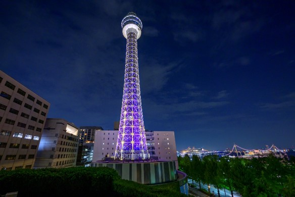

マリンタワー
コスモクロック21

東京オリンピック

横浜スタジアム

昭和の横浜（赤レンガ倉庫）

当時のマリンタワーはどんな場所でしたか？
（ここに答えを入力）
今のコスモクロック21（でっかい観覧車）ができる前は何がありましたか？
（ここに答えを入力）
東京オリンピックのにぎわいや、印象に残っているにおい・音・風景はありますか？
（ここに答えを入力）
横浜スタジアム関連で心に残っている思い出があれば教えてください。
（ここに答えを入力）
昭和の頃の横浜を、今の若い世代に一言で伝えるとしたら、どんな場所だったですか？
（ここに答えを入力）